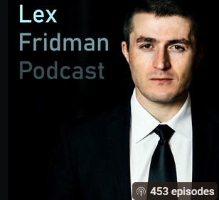

Podcasts
1. IT Career Podcast
This podcast is an excellent resource for anyone looking to transition into an IT career. The host, The Bearded IT Dad, presents information in a clear and accessible way, making complex topics easy to understand.
What makes this podcast especially inspiring is the host’s personal journey. Coming from a construction background and working as a truck driver earning over $70K a year, he found his true passion in IT. Through his interviews and discussions, he consistently encourages listeners to overcome their fears and take the leap into the tech industry.
The topics I’ve found particularly valuable include cybersecurity, networking, certification roadmaps, and governance, risk, and compliance (GRC) both within and beyond the IT world.
2. Lex Fridman Podcast
Lex Fridman describes himself on LinkedIn as a researcher focused on human-centered AI, particularly in the context of autonomous vehicles and human-robot collaboration. He hosts a YouTube show covering a wide range of topics, including politics, history, and technology—past, present, and future.
One of the first IT/tech-related episodes I watched was "Future of the Internet, Technology, and AI Lex Fridman Podcast #386," featuring guest Marc Andreessen, a former software engineer. In this episode, they discuss the early days of the internet. Marc, who co-founded one of the first widely used web browsers with a graphical user interface (GUI), shares insights into how the web has evolved. In the late 90s, the internet looked vastly different. It was mostly text-based and required a background in computer science to navigate, unlike the user-friendly experience we have today. Marc describes one of the first blog-style pages on the web, called the "What’s New" page. In the early days, people who wanted to share their websites would contact Marc to have them listed on this page, which served as a directory for new sites. Over time, it grew exponentially in size but at the time had a lot of scepticism that it would not be a hit
As a 90's baby I found this very eye opening as I remember in the 2000's the huge difference in personal computers and networking capabilities to what I have access to now and I think it's take for granted in a way.
3. The Shawn Ryan Show
I originally started watching SRS for its Everyday Carry (EDC) episodes, but occasionally, the channel features tech and IT-related guests. One of its most popular videos, with 8.5 million views, is an interview between host Shawn Ryan and ethical hacker Ryan Montgomery. Ryan is a penetration tester, hacker gadget creator, and one of the minds behind TryHackMe.com. Out of curiosity, I ran itechfuture.co.uk through the site and was pleased to see it passed the security check. TryHackMe is designed to educate users about cybersecurity risks and vulnerabilities by exposing leaked data breaches across the web.
I’d also recommend a recent episode featuring Mike Grover, a security researcher with a background in creating physical hacking tools and hardware implants. His work demonstrates how seemingly ordinary devices can be weaponized to monitor and steal information. This episode was eye-opening—it highlighted how almost any tech hardware can be compromised. Some shocking examples included a modified VGA cable that transmits screen activity to a hacker and a USB stick designed to self-destruct after stealing data from a machine.